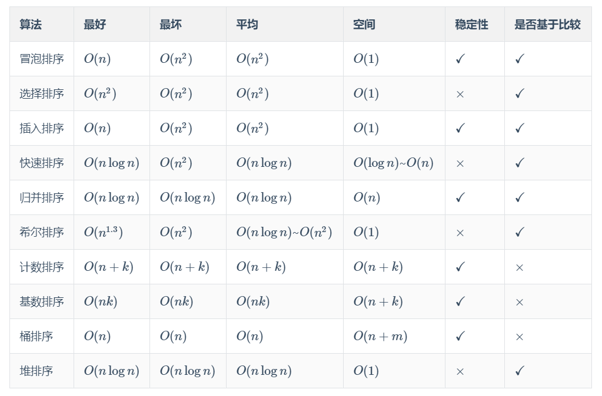

前言
本文整理并总结了十大经典的排序算法（冒泡排序、选择排序、插入排序、快速排序、归并排序、希尔排序、计数排序、基数排序、桶排序、堆排序）的时间复杂度、空间复杂度等性质。
本文并不会详细讲解每种排序算法的原理，网上有很多很好的教程，大家可以自己去搜了看。
最后我还亲自手写了十种排序算法的 c++ 代码，大家可以用来通过 LeetCode 912. 排序数组 这道题。
性质汇总
如果发现表中有错误，请留言告知。
| 算法 | 最好 | 最坏 | 平均 | 空间 | 稳定性 | 是否基于比较 |
|---|---|---|---|---|---|---|
| 冒泡排序 | $O(n)$ | $O(n^2)$ | $O(n^2)$ | $O(1)$ | $\checkmark$ | $\checkmark$ |
| 选择排序 | $O(n^2)$ | $O(n^2)$ | $O(n^2)$ | $O(1)$ | $\times$ | $\checkmark$ |
| 插入排序 | $O(n)$ | $O(n^2)$ | $O(n^2)$ | $O(1)$ | $\checkmark$ | $\checkmark$ |
| 快速排序 | $O(n\log n)$ | $O(n^2)$ | $O(n\log n)$ | $O(\log n)$~$O(n)$ | $\times$ | $\checkmark$ |
| 归并排序 | $O(n\log n)$ | $O(n\log n)$ | $O(n\log n)$ | $O(n)$ | $\checkmark$ | $\checkmark$ |
| 希尔排序 | $O(n^{1.3})$ | $O(n^2)$ | $O(n\log n)$~$O(n^2)$ | $O(1)$ | $\times$ | $\checkmark$ |
| 计数排序 | $O(n+k)$ | $O(n+k)$ | $O(n+k)$ | $O(n+k)$ | $\checkmark$ | $\times$ |
| 基数排序 | $O(nk)$ | $O(nk)$ | $O(nk)$ | $O(n+k)$ | $\checkmark$ | $\times$ |
| 桶排序 | $O(n)$ | $O(n)$ | $O(n)$ | $O(n+m)$ | $\checkmark$ | $\times$ |
| 堆排序 | $O(n\log n)$ | $O(n\log n)$ | $O(n\log n)$ | $O(1)$ | $\times$ | $\checkmark$ |
如果表格显示有问题的话，还可以直接看下面的汇总图：

维基百科
我觉得还是英文维基百科讲的比较详细、严谨。如果大家看的比较累的话，可以自己百度搜索相应的教程。
冒泡排序
https://en.wikipedia.org/wiki/Bubble_sort
选择排序
https://en.wikipedia.org/wiki/Selection_sort
插入排序
https://en.wikipedia.org/wiki/Insertion_sort
快速排序
https://en.wikipedia.org/wiki/Quicksort
归并排序
https://en.wikipedia.org/wiki/Merge_sort
希尔排序
https://en.wikipedia.org/wiki/Shellsort
计数排序
https://en.wikipedia.org/wiki/Counting_sort
基数排序
https://en.wikipedia.org/wiki/Radix_sort
桶排序
https://en.wikipedia.org/wiki/Bucket_sort
堆排序
https://en.wikipedia.org/wiki/Heapsort
代码实现
参考：https://www.cnblogs.com/guoyaohua/p/8600214.html
1、冒泡排序
import java.util.Arrays;
//冒泡排序(稳定)
/*
* 平均时间复杂度：O(n²)，最好情况：O(n)，最坏情况：O(n²)，
* 空间复杂度：O(1)
*
* 思想：两两交换
1、比较相邻的元素。如果第一个比第二个大，就交换它们两个；
2、对每一对相邻元素作同样的工作，从开始第一对到结尾的最后一对，这样在最后的元素应该会是最大的数；
3、针对所有的元素重复以上的步骤，除了最后一个；
4、重复步骤1~3，直到排序完成。
*
* */
public class BubbleSort {
public static int[] bubbleSort(int[] array){
if(array.length==0){
return array;
}
for (int i = 0; i <array.length ; i++) {
//加入一个布尔变量,如果内循环没有交换值,说明已经排序完成,提前终止
boolean flag=true;
for (int j = 0; j <array.length-1-i ; j++) {
if(array[j]>array[j+1]){
int temp=array[j+1];
array[j+1]=array[j];
array[j]=temp;
flag=false;
}
}
if(flag){
break;
}
}
return array;
}
public static void main(String[] args) {
int[] array=new int[]{3,2,5,10,1,7,6,9,8,4};
System.out.println(Arrays.toString(bubbleSort(array)));
}
}2、选择排序
import java.util.Arrays;
//选择排序(不稳定)
/*
* 平均时间复杂度：O(n²)，最好情况：O(n²)，最坏情况：O(n²)，
* 空间复杂度：O(1)
*
* 思想：每轮都找最大或最小的数
* 首先在未排序序列中找到最小（大）元素，存放到排序序列的起始位置，
* 然后，再从剩余未排序元素中继续寻找最小（大）元素，
* 然后放到已排序序列的末尾。以此类推，直到所有元素均排序完毕。
* */
public class SelectSort {
public static int[] selectSort(int[] array){
if(array.length==0){
return array;
}
for (int i = 0; i <array.length ; i++) {
int minIndex=i;
for (int j = i; j <array.length ; j++) {
//找到最小的数
if(array[j]<array[minIndex]){
//将最小数的索引保存
minIndex=j;
}
}
int temp=array[minIndex];
array[minIndex]=array[i];
array[i]=temp;
}
return array;
}
public static void main(String[] args) {
int[] array=new int[]{3,2,5,10,1,7,6,9,8,4};
System.out.println(Arrays.toString(selectSort(array)));
}
}3、插入排序
//插入排序(稳定)
/*
* 平均时间复杂度：O(n²)，最好情况：O(n)，最坏情况：O(n²)，
* 空间复杂度：O(1)
*
* 思想：对于未排序数据，在已排序序列中从后向前扫描，找到相应位置并插入
1、从第一个元素开始，该元素可以认为已经被排序；
2、取出下一个元素，在已经排序的元素序列中从后向前扫描；
3、如果该元素（已排序）大于新元素，将该元素移到下一位置；
4、重复步骤3，直到找到已排序的元素小于或者等于新元素的位置；
5、将新元素插入到该位置后；
6、重复步骤2~5
*
* */
public class InsertSort {
public static int[] insertSort(int[] array){
if(array.length==0){
return array;
}
int cur;
for (int i = 0; i <array.length-1 ; i++) {
cur=array[i+1];
int preIndex=i;
while(preIndex>=0 && cur<array[preIndex]){
array[preIndex+1]=array[preIndex];
preIndex--;
}
array[preIndex+1]=cur;
}
return array;
}
public static void main(String[] args) {
int[] array=new int[]{3,2,5,10,1,7,6,9,8,4};
System.out.println(Arrays.toString(insertSort(array)));
}
}4、希尔排序
import java.util.Arrays;
//希尔排序(不稳定)
/*
* 平均时间复杂度：O(nlogn)，最好情况：O(n(1.3次方))，最坏情况：O(n²)，
* 空间复杂度：O(1)
*
* 思想：希尔排序也是一种插入排序，它是简单插入排序经过改进之后的一个更高效的版本，
* 也称为缩小增量排序，同时该算法是冲破O(n2）的第一批算法之一。
* 它与插入排序的不同之处在于，它会优先比较距离较远的元素。希尔排序又叫缩小增量排序。
1、选择一个增量序列t1，t2，…，tk，其中ti>tj，tk=1；
2、按增量序列个数k，对序列进行k 趟排序；
3、每趟排序，根据对应的增量ti，将待排序列分割成若干长度为m 的子序列，
* 分别对各子表进行直接插入排序。仅增量因子为1 时，整个序列作为一个表来处理，
* 表长度即为整个序列的长度。
*
* */
public class ShellSort {
public static int[] shellSort(int[] array){
int len=array.length;
if(len==0){
return array;
}
int temp,gap=len/2;
while(gap>0){
for (int i = gap; i <len ; i++) {
temp=array[i];
int preIndex=i-gap;
while(preIndex>=0 && array[preIndex]>temp){
array[preIndex+gap]=array[preIndex];
preIndex-=gap;
}
array[preIndex+gap]=temp;
}
gap/=2;
}
return array;
}
public static void main(String[] args) {
int[] array=new int[]{3,2,5,10,1,7,6,9,8,4};
System.out.println(Arrays.toString(shellSort(array)));
}
}5、归并排序
//归并排序(稳定)
/*
* 平均时间复杂度：O(nlogn)，最好情况：O(nlogn)，最坏情况：O(nlogn)，
* 空间复杂度：O(1)
*
* 思想：归并排序是建立在归并操作上的一种有效的排序算法。
* 该算法是采用分治法（Divide and Conquer）的一个非常典型的应用。
* 归并排序是一种稳定的排序方法。将已有序的子序列合并，得到完全有序的序列；
* 即先使每个子序列有序，再使子序列段间有序。若将两个有序表合并成一个有序表，称为2-路归并。
1、把长度为n的输入序列分成两个长度为n/2的子序列；
2、对这两个子序列分别采用归并排序；
3、将两个排序好的子序列合并成一个最终的排序序列。
*
* */
public class MergeSort {
public static int[] mergeSort(int[] array) {
if (array.length < 2){
return array;
}
int mid = array.length / 2;
int[] left = Arrays.copyOfRange(array, 0, mid);
int[] right = Arrays.copyOfRange(array, mid, array.length);
return merge(mergeSort(left), mergeSort(right));
}
public static int[] merge(int[] left, int[] right) {
int[] res=new int[left.length+right.length];
for (int index = 0,i=0,j=0; index <res.length ; index++) {
//left数组到达了边界，那就只要把right的全加进来就好了
if(i>=left.length){
res[index]=right[j++];
}
//right数组到达了边界，那就只要把right的全加进来就好了
else if(j>=right.length){
res[index]=left[i++];
}
//两个数组都没到达边界，那就把小的的加进来
else if(left[i]>right[j]){
res[index]=right[j++];
}
else {
res[index]=left[i++];
}
}
return res;
}
public static void main(String[] args) {
int[] array=new int[]{3,2,5,10,1,7,6,9,8,4}; System.out.println(Arrays.toString(mergeSort(array)));
}
}6、快速排序
import java.util.Arrays;
//快速排序(不稳定)
/*
* 平均时间复杂度：O(nlogn)，最好情况：O(nlogn)，最坏情况：O(n²)，
* 空间复杂度：O(1)
*
* 思想：通过一趟排序将待排记录分隔成独立的两部分，
* 其中一部分记录的关键字均比另一部分的关键字小，
* 则可分别对这两部分记录继续进行排序，以达到整个序列有序。
1、从数列中挑出一个元素，称为 “基准”(pivot);
2、重新排序数列，所有元素比基准值小的摆放在基准前面，
* 所有元素比基准值大的摆在基准的后面（相同的数可以到任一边）。
* 在这个分区退出之后，该基准就处于数列的中间位置。这个称为分区（partition）操作；
3、递归地（recursive）把小于基准值元素的子数列和大于基准值元素的子数列排序。
*
* */
public class QuickSort {
public static int[] quickSort(int[] array, int start, int end) {
if (array.length < 1 || start < 0 || end >= array.length || start > end) {
return null;
}
int smallIndex = partition(array, start, end);
quickSort(array, start, smallIndex - 1);
quickSort(array, smallIndex + 1, end);
return array;
}
public static int partition(int[] array, int start, int end) {
//选择基准点，这种方式可以避免快排复杂度增加
int pivotIndex = (int) (start + Math.random() * (end - start + 1));
//把选中的值放到第一个位置
swap(array, pivotIndex, start);
int pivot=array[start];
//设置双指针
int low=start+1;
int high=end;
while(true){
//如果左边指针处的值比选定值小，则不用动，low++
while(low<=end && array[low]<pivot){
low++;
}
//如果左边指针处的值比选定值大，则不用动，low++
while(high>start && array[high]>pivot){
high--;
}
//当low>high时，意味着遍历完了
if(low>high){
break;
}
//如果相等的元素通过交换，等概率分到数组的两边
//high现在指向的元素比pivot小，low指向的元素比high大，所以交换
//快排就是基于划分的思想，划分之后左边比这个基准值小，右边比基准值大
swap(array,low,high);
low++;
high--;
}
//high已经到达低位
swap(array,start,high);
return high;
}
public static void swap(int[] array, int i, int j) {
int temp=array[i];
array[i]=array[j];
array[j]=temp;
}
public static void main(String[] args) {
int[] array=new int[]{3,2,5,10,1,7,6,9,8,4};
System.out.println(Arrays.toString(quickSort(array,0,array.length-1)));
}
}7、堆排序
import java.util.Arrays;
//堆排序(不稳定)
/*
* 平均时间复杂度：O(nlogn)，最好情况：O(nlogn)，最坏情况：O(nlogn)，
* 空间复杂度：O(1)
*
* 思想：
*
* */
public class HeapSort {
public static int[] heapSort(int[] array){
int len=array.length;
//将数组整理成堆
heapify(array);
//循环将堆的首位与末位交换，然后调整堆
for (int i = len-1; i >0 ;) {
swap(array,0,i);
i--;
//调整堆
siftDown(array,0,i);
}
return array;
}
private static void heapify(int[] array) {
int len=array.length;
//从最后一个非叶子节点开始向上构造大顶堆
for (int i = (len/2 - 1); i >=0 ; i--) {
siftDown(array, i, len - 1);
}
}
//此函数的目的是：保证堆顶是最大的
private static void siftDown(int[] array, int k, int end) {
//如果k左子树的位置下标小于堆的大小，即数组长度
while (2 * k + 1 <= end) {
//令j为k的左子树
int j = 2 * k + 1;
//如果k的右子树小于堆的大小，即数组长度
//并且右子树的值比左子树的值大，j到达右子树
if (j + 1 <= end && array[j + 1] > array[j]) {
j++;
}
//如果k的左子树的值大于其值，交换两个值，保证堆顶是最大的
if (array[j] > array[k]) {
swap(array, j, k);
} else {
break;
}
//往下遍历，因为可能k所在层调整之后，下面几层又要调整
k = j;
}
}
private static void swap(int[] array, int i, int j) {
int temp=array[i];
array[i]=array[j];
array[j]=temp;
}
public static void main(String[] args) {
int[] array=new int[]{3,2,5,10,1,7,6,9,8,4};
System.out.println(Arrays.toString(heapSort(array)));
}
}下面三种算法，均转载于
8、计数算法
//计数排序(稳定)
/*
* 平均时间复杂度：O(n+k)，最好情况：O(n+k)，最坏情况：O(n+k)，
* 空间复杂度：O(n+k)
*
* 思想：计数排序(Counting sort)是一种稳定的排序算法。
* 计数排序使用一个额外的数组C，其中第i个元素是待排序数组A中值等于i的元素的个数。
* 然后根据数组C来将A中的元素排到正确的位置。它只能对整数进行排序。
*
1、找出待排序的数组中最大和最小的元素；
2、统计数组中每个值为i的元素出现的次数，存入数组C的第i项；
3、对所有的计数累加（从C中的第一个元素开始，每一项和前一项相加）；
4、反向填充目标数组：将每个元素i放在新数组的第C(i)项，每放一个元素就将C(i)减去1。
*
*
* */
import java.util.Arrays;
public class CountSort {
private static final int OFFSET = 50000;
public static int[] countSort(int[] nums) {
int len = nums.length;
// 由于 -50000 <= A[i] <= 50000
// 因此"桶" 的大小为 50000 - (-50000) = 10_0000
// 并且设置偏移 OFFSET = 50000，目的是让每一个数都能够大于等于 0
// 这样就可以作为 count 数组的下标，查询这个数的计数
int size = 10_0000;
// 计数数组
int[] count = new int[size];
// 计算计数数组
for (int num : nums) {
count[num + OFFSET]++;
}
// 把 count 数组变成前缀和数组
for (int i = 1; i < size; i++) {
count[i] += count[i - 1];
}
// 先把原始数组赋值到一个临时数组里，然后回写数据
int[] temp = new int[len];
System.arraycopy(nums, 0, temp, 0, len);
// 为了保证稳定性，从后向前赋值
for (int i = len - 1; i >= 0; i--) {
int index = count[temp[i] + OFFSET] - 1;
nums[index] = temp[i];
count[temp[i] + OFFSET]--;
}
return nums;
}
public static void main(String[] args) {
int[] array=new int[]{3,2,5,10,1,7,6,9,8,4};
System.out.println(Arrays.toString(countSort(array)));
}
}9、桶排序
//桶排序(稳定)
/*
* 平均时间复杂度：O(n+k)，最好情况：O(n+k)，最坏情况：O(n²)，
* 空间复杂度：O(n+k)
*
* 思想：假设输入数据服从均匀分布，将数据分到有限数量的桶里，
* 每个桶再分别排序（有可能再使用别的排序算法或是以递归方式继续使用桶排序进行排序）
*
1、人为设置一个BucketSize，作为每个桶所能放置多少个不同数值（例如当BucketSize==5时，该桶可以存放｛1,2,3,4,5｝这几种数字，但是容量不限，即可以存放100个3）；
2、遍历输入数据，并且把数据一个一个放到对应的桶里去；
3、对每个不是空的桶进行排序，可以使用其它排序方法，也可以递归使用桶排序；
4、从不是空的桶里把排好序的数据拼接起来。
*
*
* */
public class BucketSort {
// 桶排序
// 1 <= A.length <= 10000
// -50000 <= A[i] <= 50000
// 10_0000
private static final int OFFSET = 50000;
public static int[] bucketSort(int[] nums) {
int len = nums.length;
// 第 1 步：将数据转换为 [0, 10_0000] 区间里的数
for (int i = 0; i < len; i++) {
nums[i] += OFFSET;
}
// 第 2 步：观察数据，设置桶的个数
// 步长：步长如果设置成 10 会超出内存限制
int step = 1000;
// 桶的个数
int bucketLen = 10_0000 / step;
int[][] temp = new int[bucketLen + 1][len];
int[] next = new int[bucketLen + 1];
// 第 3 步：分桶
for (int num : nums) {
int bucketIndex = num / step;
temp[bucketIndex][next[bucketIndex]] = num;
next[bucketIndex]++;
}
// 第 4 步：对于每个桶执行插入排序
for (int i = 0; i < bucketLen + 1; i++) {
insertionSort(temp[i], next[i] - 1);
}
// 第 5 步：从桶里依次取出来
int[] res = new int[len];
int index = 0;
for (int i = 0; i < bucketLen + 1; i++) {
int curLen = next[i];
for (int j = 0; j < curLen; j++) {
res[index] = temp[i][j] - OFFSET;
index++;
}
}
return res;
}
private static void insertionSort(int[] arr, int endIndex) {
for (int i = 1; i <= endIndex; i++) {
int temp = arr[i];
int j = i;
while (j > 0 && arr[j - 1] > temp) {
arr[j] = arr[j - 1];
j--;
}
arr[j] = temp;
}
}
}10、基数排序
public class RadixSort {
// 基数排序：低位优先
private static final int OFFSET = 50000;
public int[] radixSort(int[] nums) {
int len = nums.length;
// 预处理，让所有的数都大于等于 0，这样才可以使用基数排序
for (int i = 0; i < len; i++) {
nums[i] += OFFSET;
}
// 第 1 步：找出最大的数字
int max = nums[0];
for (int num : nums) {
if (num > max) {
max = num;
}
}
// 第 2 步：计算出最大的数字有几位，这个数值决定了我们要将整个数组看几遍
int maxLen = getMaxLen(max);
// 计数排序需要使用的计数数组和临时数组
int[] count = new int[10];
int[] temp = new int[len];
// 表征关键字的量：除数
// 1 表示按照个位关键字排序
// 10 表示按照十位关键字排序
// 100 表示按照百位关键字排序
// 1000 表示按照千位关键字排序
int divisor = 1;
// 有几位数，外层循环就得执行几次
for (int i = 0; i < maxLen; i++) {
// 每一步都使用计数排序，保证排序结果是稳定的
// 这一步需要额外空间保存结果集，因此把结果保存在 temp 中
countingSort(nums, temp, divisor, len, count);
// 交换 nums 和 temp 的引用，下一轮还是按照 nums 做计数排序
int[] t = nums;
nums = temp;
temp = t;
// divisor 自增，表示采用低位优先的基数排序
divisor *= 10;
}
int[] res = new int[len];
for (int i = 0; i < len; i++) {
res[i] = nums[i] - OFFSET;
}
return res;
}
private void countingSort(int[] nums, int[] res, int divisor, int len, int[] count) {
// 1、计算计数数组
for (int i = 0; i < len; i++) {
// 计算数位上的数是几，先取个位，再十位、百位
int remainder = (nums[i] / divisor) % 10;
count[remainder]++;
}
// 2、变成前缀和数组
for (int i = 1; i < 10; i++) {
count[i] += count[i - 1];
}
// 3、从后向前赋值
for (int i = len - 1; i >= 0; i--) {
int remainder = (nums[i] / divisor) % 10;
int index = count[remainder] - 1;
res[index] = nums[i];
count[remainder]--;
}
// 4、count 数组需要设置为 0 ，以免干扰下一次排序使用
for (int i = 0; i < 10; i++) {
count[i] = 0;
}
}
/**
* 获取一个整数的最大位数
*
* @param num
* @return
*/
private int getMaxLen(int num) {
int maxLen = 0;
while (num > 0) {
num /= 10;
maxLen++;
}
return maxLen;
}
}